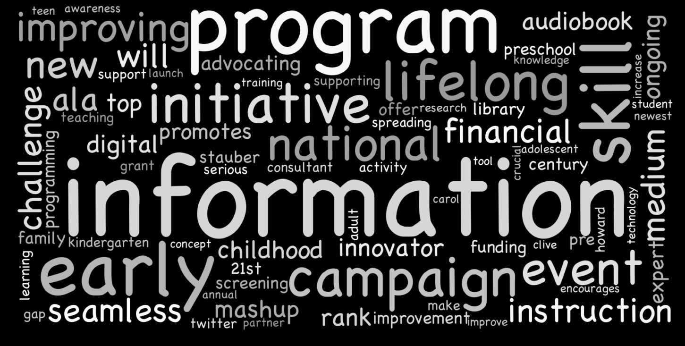
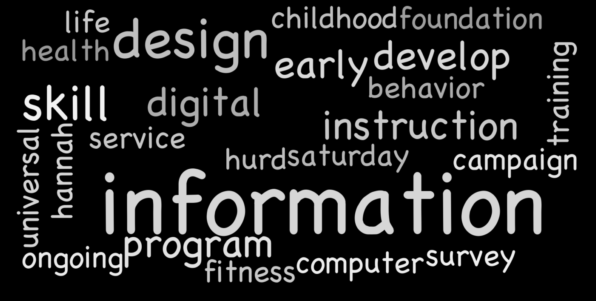

Lou, D. (2019) The The story of “literacy” in American Libraries Direct, American Libraries Magazine. Available at: https://americanlibrariesmagazine.org/latest-links/story-literacy-american-libraries-direct/ (Accessed: March 15, 2019).
The article Examining the word “literacy” on AL Direct, December 18, 2018, raised my interest in examining the word “literacy” in a different way. As was the article’s author Georgina Trebbe, I am quite amazed by the popularity of the word “literacy” which is deeply rooted in libraries. Likewise, I want to have a better understanding of how the usage of “literacy” changed over the years. Then an interesting idea occurred to me: how about examining the word “literacy” in all issues of American Libraries Direct by applying the skills in “data literacy”, “digital literacy” and “information literacy”?
My little pet project started from scraping the American Libraries Direct Archive by writing a Python script, and saving those data in csv files. The most important data is the issue date, article title, and article summary. For the purpose of the project, I excluded miscellaneous information that are not an article in these issues.
Then I used Python Pandas to import the whole data set.
df = pd.read_csv('Data/american_libraries_summaries.csv', index_col=0)
Fig. 0: Screenshot of scraped data from AL Direct Archive
Frequency of “literacy” and its pairings
The next step is to use Python’s natural language processing package NLTK to trace the word “literacy” in all archived issues. I would like to get the frequency distribution of the word in AL Direct Archive. (Frequency distribution generates raw counts of a given word in a text.) I used the word “information”, “program” and “digital” as “controlled variables” in my experiment. I will explain why these specific words are selected later on.
Before calculating the frequency distribution, I developed a set of code to normalize all words in content. This is a critical step to ensure that I will get more accurate result. My script should not be case sensitive when counting the occurrences of a given word. What’s more, it should take plural words like “programs” into account. Then I run the code to get the frequency distribution.
cfd = nltk.ConditionalFreqDist(
(year, word)
for year in range(2006,2019)
for word in [singular(w.lower()) for w in annualSummaries(year, df)])modals = ['literacy', 'information', 'program', 'digital']years = range(2006,2019)years_data = tabulate(cfd, modals,years)
Fig. 1 shows that the frequency of occurrence for the word”literacy” is relatively stable. (The frequency of occurrence is computed by dividing the frequency distribution with the total count of words in a given text.) The “literacy” line has a slight uptick compared to the declining lines of the other three words. However, on average, “literacy” is still the least used word among all four words here. It merely contributes about 0.047% to AL Direct Archive throughout the years. (See Table 1)
Fig. 1: Frequency of Occurrence for words “literacy”, “information”, “program” and “digital”
| Year | literacy Frequency Distribution | literacy Frequency of Occurrence | information Frequency Distribution | information Frequency of Occurrence | program Frequency Distribution | program Frequency of Occurrence | digital Frequency Distribution | digital Frequency of Occurrence |
|---|---|---|---|---|---|---|---|---|
| 2006 | 75 | 0.06% | 302 | 0.22% | 297 | 0.22% | 109 | 0.08% |
| 2007 | 86 | 0.04% | 452 | 0.19% | 477 | 0.20% | 193 | 0.08% |
| 2008 | 116 | 0.04% | 574 | 0.19% | 560 | 0.18% | 194 | 0.06% |
| 2009 | 161 | 0.04% | 602 | 0.17% | 658 | 0.18% | 261 | 0.07% |
| 2010 | 173 | 0.05% | 514 | 0.14% | 667 | 0.18% | 279 | 0.08% |
| 2011 | 171 | 0.05% | 457 | 0.14% | 659 | 0.20% | 317 | 0.09% |
| 2012 | 238 | 0.06% | 541 | 0.13% | 736 | 0.18% | 632 | 0.15% |
| 2013 | 233 | 0.05% | 519 | 0.12% | 734 | 0.17% | 526 | 0.12% |
| 2014 | 174 | 0.05% | 456 | 0.13% | 636 | 0.18% | 456 | 0.13% |
| 2015 | 45 | 0.04% | 145 | 0.12% | 200 | 0.17% | 187 | 0.15% |
| 2016 | 53 | 0.04% | 185 | 0.16% | 157 | 0.13% | 119 | 0.10% |
| 2017 | 52 | 0.04% | 172 | 0.14% | 183 | 0.15% | 108 | 0.09% |
| 2018 | 64 | 0.05% | 140 | 0.11% | 184 | 0.15% | 97 | 0.08% |
Table 1: Frequency of words “literacy”, “information”, “program” and “digital
You will notice the frequency distribution numbers are strikingly higher across the board from 2006 and 2014 (see Fig.2 and Table 1) . It is due to content cutdown in each issue since Oct 7, 2014, which is an unexpected discovery for my pet project. I will explain this in details later on.
Fig. 2: Frequency distribution for words “literacy”, “information”, “program” and “digital
The frequency distribution and the frequency of occurrence data give us a nice overview of how low profile the word “literacy” is. But we still do not know in what contexts this word is get used.
To shed some light on this inquiry, I chose to use and modify NLTK’s concordance function. By default, the concordance functions shows us every occurrence of a given word, together with some context. I modified the function to return all the words used next to (before and after) every occurrence of a given word. Basically, this will help me to find all the literacy pairings. Then I drew word cloud graphs to visually display the data. I also computed the frequency of the pairing words to get accurate results. (See Fig. 3)
Fig. 3: Word cloud for pairing words of “literacy” in AL Direct from 2006 to 2018
As you can see from Fig. 3 and Table 3, the top three pairing words are “information”, “digital” and “program”. That is why I picked these as “controlled words” in the frequency of occurrence calculation.
| Word | Count |
|---|---|
| information | 203 |
| digital | 91 |
| program | 77 |
| early | 72 |
| skill | 54 |
| financial | 46 |
| medium | 26 |
| initiative | 26 |
Table 2: Frequency distribution of pairing words of “literacy” in AL Direct from 2006 to 2018
Below are word cloud graphs for annual data.
| Year | Word Cloud |
|---|---|
| 2006 | |
| 2007 | |
| 2008 | |
| 2009 |  |
| 2010 |  |
| 2011 | |
| 2012 | |
| 2013 | |
| 2014 |  |
| 2015 | |
| 2016 |  |
| 2017 | |
| 2018 |
Table 3: Word cloud for pairing words of “literacy” in AL Direct by year
From Table 3 and Table 4 , we can see that except in 2012 and 2018, “information literacy” is always the most popular term among all literacy topics. Apparently, we librarians holds “information literacy” dearly.
- Information Literacy: the ability to use information and communications technologies to effectively locate, evaluate, determine relevancy, synthesize, and use information ethically.
I think “literacy skills”, “early literacy” and “family literacy” all belong to a same category, despite their slight differences, they all emphasize building skills required for reading and writing:
- Literacy skills: all the skills needed for reading and writing.
- Early Literacy: what children know about reading and writing before they actually read or write.
- Family literacy: home literacy activities that provide literacy skill-building opportunities for young children while enhancing literacy skill development in all members of the family.
And this category is an important and constant theme as shown by data. From 2006 to 2015, it always had spot on the top three literacy pairings list. Noticeably, “early literacy” appeared on the list in 5 out of 13 years.
“Literacy program” was popular from 2007 to 2009. But since 2011, it never actually managed to come back to the top three list again. It is possible that instead of discussing general literacy programs, librarians switched to focus on specific ones.
- Literacy program: library programs to promote literacy.
“Digital literacy” maintained popular from 2011 throughout to 2013, and afterwards, it tuned down.
- Digital literacy: the ability to use information and communication technologies to find, evaluate, create, and communicate information, requiring both cognitive and technical skills.
“Financial literacy” shows the libraries’ rapid response to the economic crisis around the time. It was listed as the top three literacy topics in both 2014 and last year, 2018.
- Financial literacy: the possession of the set of skills and knowledge that allows an individual to make informed and effective decisions with all of their financial resources.
Besides financial literacy, in recent years, “health literacy” also started to catch libraries’ attention.
- Health literacy: the degree to which individuals have the capacity to obtain, process, and understand basic health information and services needed to make appropriate health decisions.
| Year | Word(s) | Count |
|---|---|---|
| 2006 | information | 9 |
| skill | 5 | |
| family, campaign, adult | 3 | |
| 2007 | program | 6 |
| skill, information | 5 | |
| 2008 | information | 15 |
| program | 8 | |
| skill | 4 | |
| 2009 | information | 19 |
| program | 10 | |
| early | 8 | |
| 2010 | information | 23 |
| family | 7 | |
| initiative | 6 | |
| 2011 | information | 16 |
| digital | 10 | |
| program | 8 | |
| 2012 | digital | 36 |
| information | 28 | |
| early | 11 | |
| 2013 | information | 29 |
| digital | 24 | |
| early | 20 | |
| 2014 | information | 28 |
| financial | 13 | |
| early | 10 | |
| 2015 | information | 4 |
| health | 3 | |
| childhood | 3 | |
| 2016 | information | 13 |
| design | 4 | |
| skill | 3 | |
| 2017 | information | 9 |
| medium | 5 | |
| news, instruction, improves, digital, attitude | 2 | |
| 2018 | early | 7 |
| information | 5 | |
| health, financial | 4 |
Table 4: Top pairing words of “literacy” in AL Direct by year
AL Direct’s Content Cutdown Strategy
I made an unexpected discovery when scraping the AL Direct Archive. I noticed that there are roughly two different styles for all the archived pages. This implicates that some time in the past AL Direct updated its online appearance. The style modification also indicates the underlying change of the content strategy. By glancing over the size of data in different years, I made the conclusion that the update might have taken place toward the end of 2014 or the beginning of 2015. The annual data size abruptly dropped from 2.9M in 2014 to less than 1M in 2015 (see Fig. 1).
Fig. 1: Data size of AL Direct Archive by year
A closer look of the number of articles per month agrees with this conclusion. In October 2014, this number shrank to almost a third of that of the previous month. (see Fig. 2)

Fig. 2: Number of articles per month from 2006 to 2018
Let’s zoom in to the data in October 2014, and we notice the number of articles per issue plunged on Oct 7, 2014, and it maintained that low level onwards. (see Fig. 3)
Fig. 3: Number of articles per issue in October 2014
This content cutdown strategy is a smart move if we consider the unpopularity trend of “mailing list” since 2014 as Google Trends told us. (see Fig.4)

Fig. 4: Trend of “mailing list” from Google Trends
I am sure the downsizing of AL Direct helped many librarians to better manage their professional readings every week. Before, a subscriber might have felt overwhelmed every week when he/she clicked and opened the long mailing list containing 75 articles on average (at the peak, it was 182 articles to read in the week of July 2, 2010 and July 3, 2013). Now, he/she only has an average of 12 articles to go through in every seven days.